AnyPortrait > Manual > Merge Materials
Merge Materials
1.3.5
AnyPortrait uses a method of rendering multiple Mesh Renderers in order.
However, this method can lead to a significant increase in draw calls.
So AnyPortrait has various systems to reduce draw calls. (Related page)
However, the existing draw call optimization system has a limitation in that it works only when the image and material are the same.
If a single character contains more than one image, or if you want to synchronize two characters to look like one character, this limitation is greatly emphasized.
The "Merging Materials" function added in AnyPortrait v1.3.5 relaxes this limitation a bit more.
Even if the images are different, multiple materials can be rendered at once if the Shader is the same..
This page covers how to use the Merging Materials function, main features, and points to note.
In particular, we will explain using an example of Synchronizing characters that can use this function effectively.
Scripts related to Synchronizing characters are not introduced in detail on this page, so please refer to the related page instead.
Relationship between draw calls and execution performance
Unity's optimization guide tells you to keep draw calls as low as possible.
In fact, draw call optimization is the number one performance optimization practice for all game engines.
Conversely, this is seen as an important challenge for engine developers as well as engine users.
Likewise, Unity is also gradually reducing the impact of draw calls on execution performance.
(According to the forum, it seems to be effectively managed since Unity 5.)
So, modern engine users don't have much of a problem with loose draw call management.
Unless you're aiming to run on a device with limited specs, you won't get much of an execution performance gain by struggling to optimize draw calls.
This is because the optimization performance of Unity itself has been improved sufficiently.
(In particular, SRP Batch, which will be described later, is representative.)
As a result, you don't have to stress about draw calls ahead of time, as long as your project's performance is fine.
Merge materials from two or more characters

For explanation, we have prepared an example of attaching a character's costume. (Related page)
In this example, the "MainCharacter" and "Costume" objects are synchronized with each other and act as a single character.

However, as the meshes of "Costume" are placed between the meshes of "MainCharacter", the draw call increases significantly as above.
This is because "MainCharacter" and "Costume" each have different images and the draw calls could not be merged.
3 draw calls are expected (background and 2 character objects), but in reality 14 more were shown.

Let's run "Frame Debugger" to see the rendering process in detail.
Run "Window > Analysis > Frame Debugger" in the Unity menu.
(The location of the menu may vary by version of Unity.)

(1) Run the game and click the Enable button.
(2) You can see the current rendering information.

Above is an image showing the rendering steps one by one in order.
You can see the meshes from "MainCharacter" and meshes from "Costume" are rendered alternately.
If the materials isn't merged, you can see that the draw calls as above can be increased.
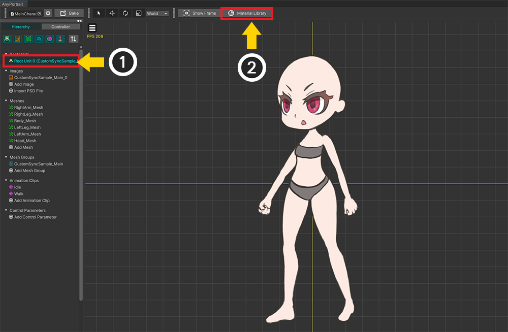
In order to use the Merging Materials function, you must use a dedicated material.
(1) Open AnyPortrait editor, select a character, and select a Root Unit.
(2) Press the Material Library button.
(For more information on how to use the material library, please refer to Related page.)
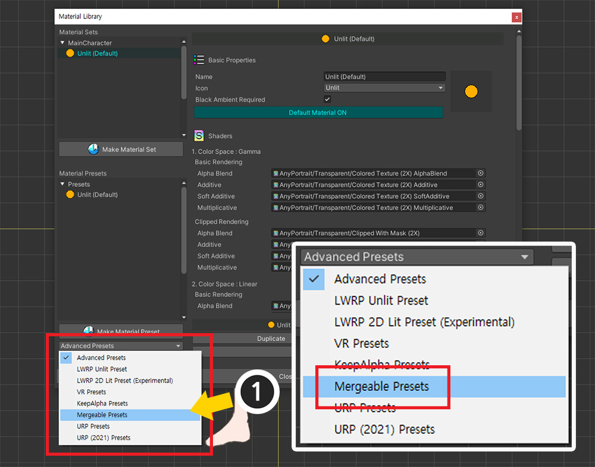
(1) Select “Mergeable Presets” among presets.
(If your project's render pipeline is set to URP, select "URP (2021) Presets" instead.)

(1) With the preset selected, press the Unpack Preset button.
(2) After installing the package, a message appears indicating that the material library must be restarted. Press the Okay button.

All packages are installed and open the material library again.
You can see the installed "Mergeable" presets.
There are two material presets: Unlit material and Lit material.

Let's create a material set using the installed material presets.
(1) Click the Make Material Set button.
(2) Select one of the installed Mergeable presets. We're not going to use lights in this page, so choose "Mergeable Unlit".
(3) Press the Select button.

(1) Select the added material set.
(2) Press the Default Material button to activate it as ON.

Execute Bake.
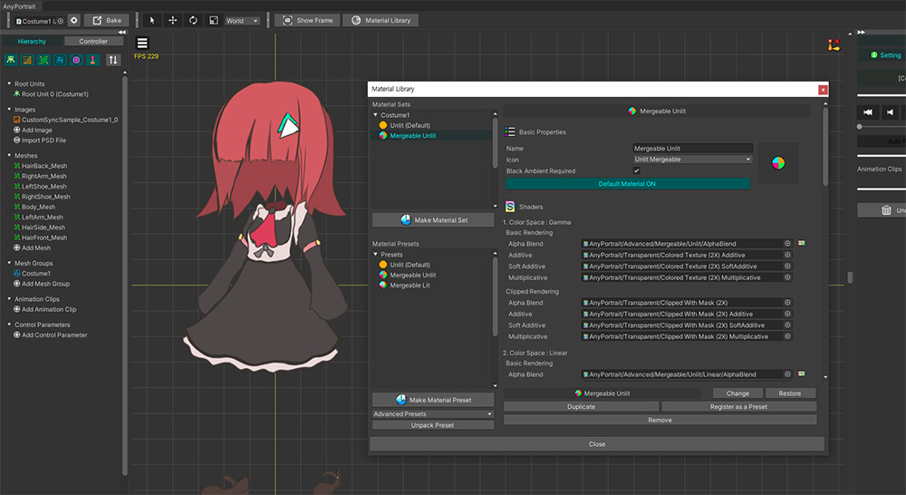
Open another character to which you want to merge materials, and repeat the above process.
Now the two characters are rendered with the same "Mergeable Unlit" shader, but with different images.
Let's write a script to merge the materials.
(The script description or function for character synchronization is omitted. Please check the detailed description in Related page.)
using UnityEngine;
using AnyPortrait;
public class MergeMaterialScript : MonoBehaviour
{
public apPortrait mainCharacter;
public apPortrait costumePrefab;
private apPortrait _attachedCostume = null;
void Start() { }
void Update()
{
// Press Q key to attach and sync the costume to the character. (Function description is skipped)
if( Input.GetKeyDown( KeyCode.Q ) )
{
// When a cloth is attached, the cloth object is assigned to the _attachedCostume variable.
AttachCostume();
}
// Press W key to remove the attached costume.
if (Input.GetKeyDown(KeyCode.W))
{
// Unmerge materials before removing the costume.
mainCharacter.UnmergeMaterials();
// Unsynchronize and remove the costume. (Function description is skipped)
// The _attachedCostume variable will be null.
DetachCostume();
}
// Press A key to merge materials with the attached costume.
if (Input.GetKeyDown(KeyCode.A))
{
if(_attachedCostume != null)
{
mainCharacter.MergeMaterials(_attachedCostume);
}
}
// Press S key to unmerge materials whether attached or not.
if (Input.GetKeyDown(KeyCode.S))
{
mainCharacter.UnmergeMaterials();
}
}
(Description of AttachCostume and DetachCostume functions is skipped)
}
You can see in the script above that the functions related to Merging Materials are used.
- MergeMaterials: Merge materials by inputting apPortrait objects as arguments. It works even if you enter multiple apPortrait or nothing.
- UnmergeMaterials : Unmerge all materials. All apPortrait objects with merged materials are disconnected.
And also focus on to call the UnmergeMaterials function first before unsynchronizing.
And these two functions contain a "material initialization" process inside.
Therefore, after calling these functions, the color of the meshes returns to its original state.
Now let's apply the above script to see how much the rendering process has changed.

In the same way, turn on Frame Debugger and tested each case.
This is the image before merging materials.
As you can see, except for some steps, most meshes are being rendered without being merged.

This is the result of merging materials by executing the MergeMaterials function.
There were only 1 draw calls to render two characters.
It's more optimized than 2, which is the expected minimum draw call to render two characters!
Features of Merging Materials
The Merging Materials function uses a shader that can receive and render up to 10 images.
This shader uses the mesh's vertex color to determine which image to use.
The Merging Materials function utilizes the properties of this shader to check all target meshes and merge them to have as few materials as possible.
However, due to these characteristics, the Merging Materials function has the following limitations.
- Clipping masks and meshes being clipped are excluded.
- Shaders other than Alpha Blend are excluded.
- Script functions that control material properties by specifying texture do not work.
- Script functions that want to collectively control material properties are for all characters. (Part of the merged character cannot be specified.)
- Images cannot be changed except for custom properties. You can change the image with the Extra option, but this will increase draw calls.
- Different shaders are not merged with each other, even if they have Mergeable attribute.
Let's see what the difference is in the result if we use a script function that controls the material of the mesh.

This is a case where the SetMeshColorAll(Color color2X) function of apPortrait is called for one character (MainCharacter).
Before the materials are merged (left), only the character whose function is called is colored.
However, after the materials are merged (right), the color of other character objects (Costume) for which the color change function has not been called will also be changed.
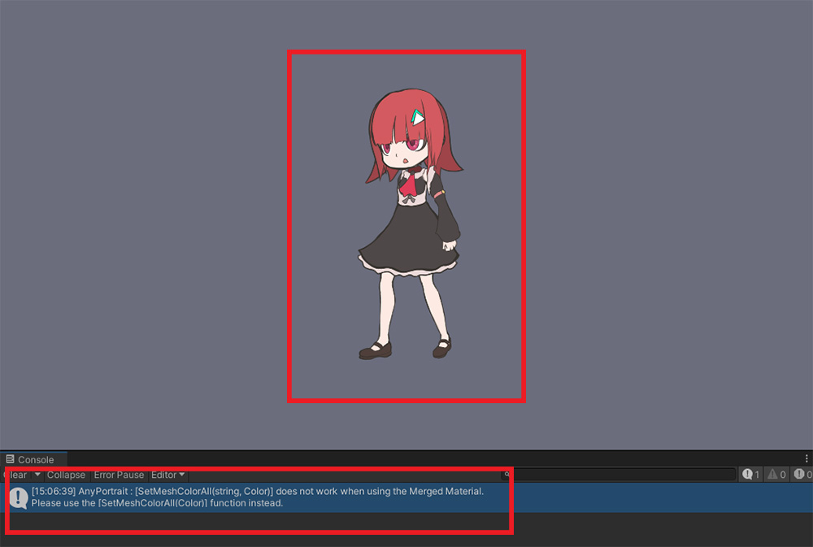
This is the result of calling SetMeshColorAll(sting optTextureName, Color color2X), a function that changes colors by entering the image name.
(The functions have the same name, but different arguments.)
Once the materials are merged, it becomes impossible to separate the textures and change their properties.
Because the previous rule, which is "one material per image", doesn't apply.
Therefore, the above script function does not work, and you can see that the log has occurred in the Console tab.
Script functions that change the material of the mesh behave differently or become unavailable after the materials are merged.
Check out the changes to the function below.
(Functions that are not introduced behave the same as before.)
Functions that expand the target to all characters with merged materials
: Targets of functions that change material properties for all meshes are expanded.
- ResetMeshMaterialToBatchAll()
- SetMeshAlphaAll(float alpha)
- SetMeshCustomAlphaAll(float alpha, string propertyName)
- SetMeshColorAll(Color color2X)
- SetMeshCustomColorAll(Color color, string propertyName)
- SetMeshCustomImageAll(Texture2D texture, string propertyName)
- SetMeshCustomTextureOffsetAll(Vector2 textureOffsetValue, string propertyName)
- SetMeshCustomTextureScaleAll(Vector2 textureScaleValue, string propertyName)
- SetMeshCustomFloatAll(float floatValue, string propertyName)
- SetMeshCustomIntAll(int intValue, string propertyName)
- SetMeshCustomVector4All(Vector4 vector4Value, string propertyName)
Functions that cannot be used
: Functions that collectively change material properties using texture as a key value do not work.
- ResetMeshMaterialToBatchByTextureName(string optTextureName)
- SetMeshImageAll(string optTextureName, Texture2D texture)
- SetMeshCustomImageAll(string optTextureName, Texture2D texture, string propertyName)
- SetMeshColorAll(string optTextureName, Color color2X)
- SetMeshAlphaAll(string optTextureName, float alpha)
- SetMeshCustomColorAll(string optTextureName, Color color, string propertyName)
- SetMeshCustomAlphaAll(string optTextureName, float alpha, string propertyName)
- SetMeshCustomFloatAll(string optTextureName, float floatValue, string propertyName)
- SetMeshCustomIntAll(string optTextureName, int intValue, string propertyName)
- SetMeshCustomVector4All(string optTextureName, Vector4 vector4Value, string propertyName)
Is merging materials the best way to reduce draw calls?
If AnyPortrait's existing draw call optimization function is applied, other characters with the same material can be rendered at once within the minimum draw call possible.
However, characters with "Merging Materials" applied cannot be rendered together with other characters.
This means that in some cases leaving characters as is without trying to merge materials, it can render within fewer draw calls.
For more information on optimizing draw calls with other characters, see the related page.
1. When merging materials is recommended
- The case that it's unique in the game, like a player character.
- The case that the synchronization function is used to attach costumes, weapons, etc. to the character.
- The case that you want to optimize a character, who has 2 or more images and has many meshes.
- The case that the draw call between characters is not well shared due to frequent use of color effects.
2. When merging materials is not recommended
- The case that there are multiple identical characters in the game, such as monster characters.
- The case that a character has only one image and color effects are not often used.
Merge Materials in URP 2D Environment

As above, if your project's render pipeline is a URP that uses 2D Renderer, you need to use a different material.

(1) Open the Material Library.
(2) Select the "URP (2021) Presets" package.

(1) Press the Unpack Preset button.
(2) After installation is complete, open the material library again.
And then you can see that the presets for URP are installed.
(3) Click the Make Material Set button.
(4) Select Mergeable materials for URP. Please select Unlit or 2D Lit appropriately depending on whether you are lighting or not.
(5) Press the Select button.
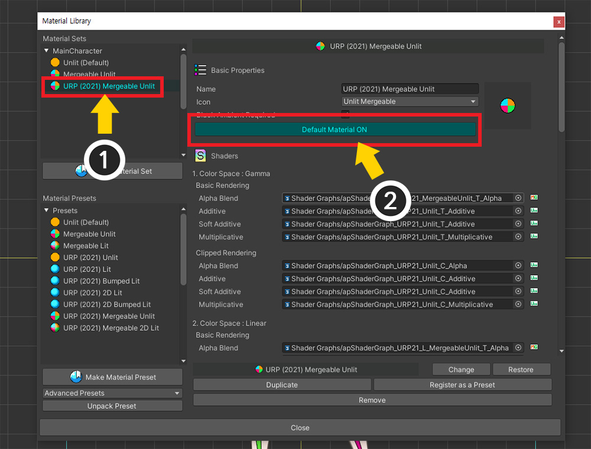
(1) Select the created material set.
(2) Press the Default Material button to activate it as ON.

Set the other character object in the same way to have the same material.
Now let's try the same test using the script we used earlier.
Let's run the game and see how the draw calls change before and after merging the materials.
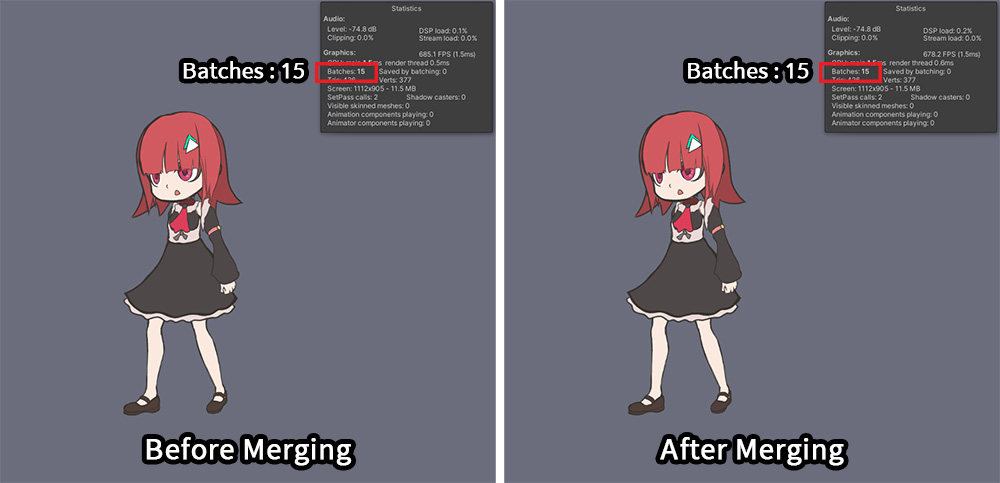
But oddly enough, the draw call value is the 15 regardless of whether the material has been merged or not.
This is related to "Optimizing draw calls in Unity", which is explained at the beginning of this page.
When using SRP (Scriptable Render Pipeline) including URP, Unity use a new draw call process.
This process is called "SRP Batch".
Meshes of different materials are rendered at once within SRP Batch.
Let's check how SRP Batch works in Frame Debugger.

This is the rendering process before merging materials.
If you look at the current rendering properties, the draw call is already reduced to 1, even before merging the materials.
Meshes with different materials were rendered at once by SRP Batch.
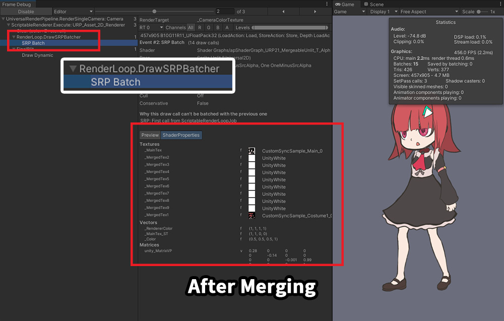
If you check the rendering properties, you can see that one material contains two textures.
It means that the materials have been merged.
You will see the same result after the materials have been merged, as we have already optimized them in Unity.
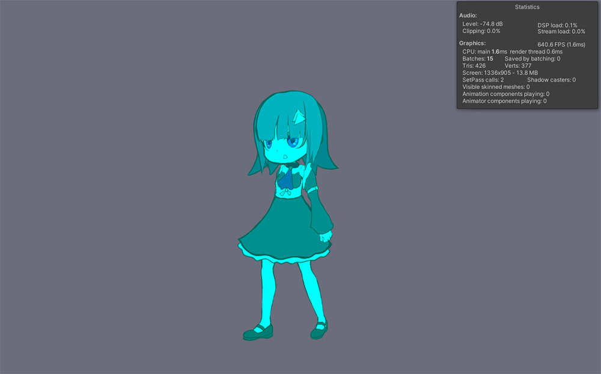
In fact, in URP, you don't even need to use the Merging Materials function.
However, for those who want to use the change in script function according to Merging Materials, we provide a Mergeable material for URP.
As shown in the image above, the "property to change material properties at once for merged characters" is available in URP.
Merging materials for a single character
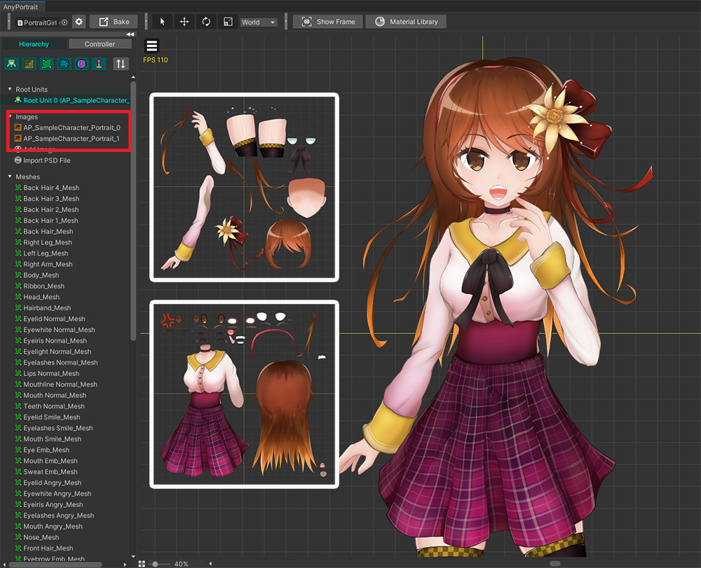
You can even enter no argument to "MergeMaterials" function.
This is for the case of having two or more images in one character, as above.
For example, when creating a character with a high-resolution illustration, two or more images are required, and the Merging Materials function is used effectively in this case.
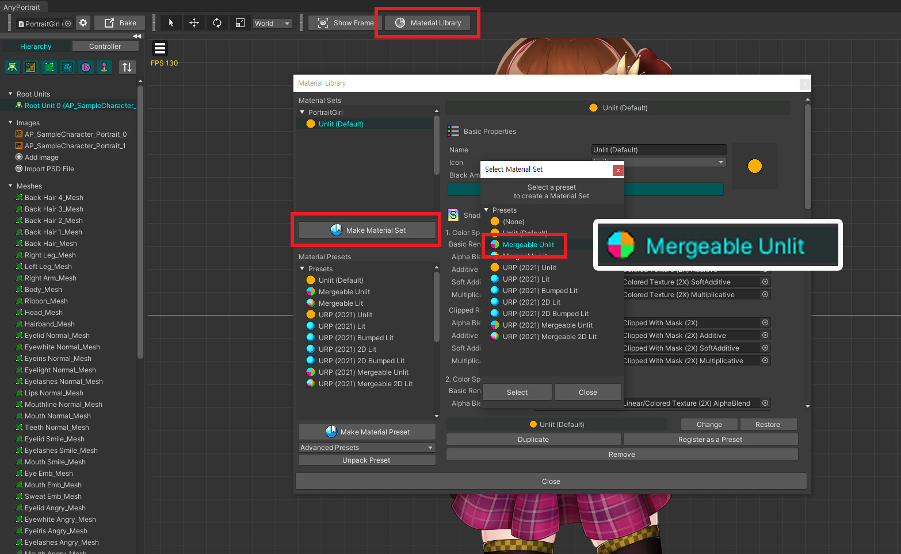
The process for merging materials is the same as above.
Create and apply material sets based on Mergeable presets in the material library.
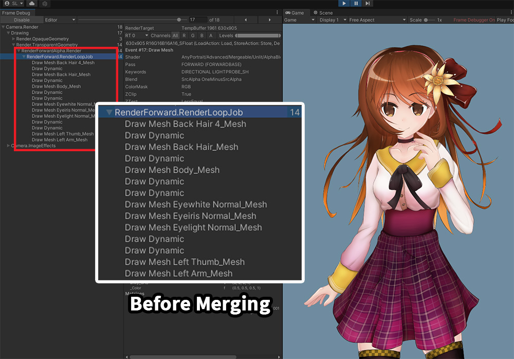
Let's run the game.
Even though there is only one character before the materials are merged, it is being rendered in several stages.

If you merge the materials using the script, you can see that all meshes are rendered with minimal draw calls except for meshes related to clipping.